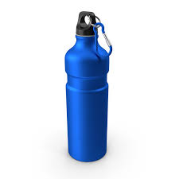

CASE STUDY
CASE STUDY BETWEEN GOOGLE LENS AND MOBILENET
GOOGEL LENS 
VS
Mobilenet
IMAGE 1= Mobile
/cdn.vox-cdn.com/uploads/chorus_asset/file/13315959/akrales_181019_3014_0770.jpg)
Result on MobileNet = Water Bottle
Result on GOOGLE LENS = Shower
IMAGE 2= Spoon

Result on MobileNet = Watch
Result on GOOGLE LENS = Telephone
IMAGE 3= Remote

Result on MobileNet = Remote
Result on GOOGLE LENS = Remote
IMAGE 4= Water Bottle

Result on MobileNet = ________(Nothing)
Result on GOOGLE LENS = Water Bottle
Google Lens is more accurate and faster for me as it has predicted 3 of the images correctly and MobileNet has predicted 1 of the image correctly.